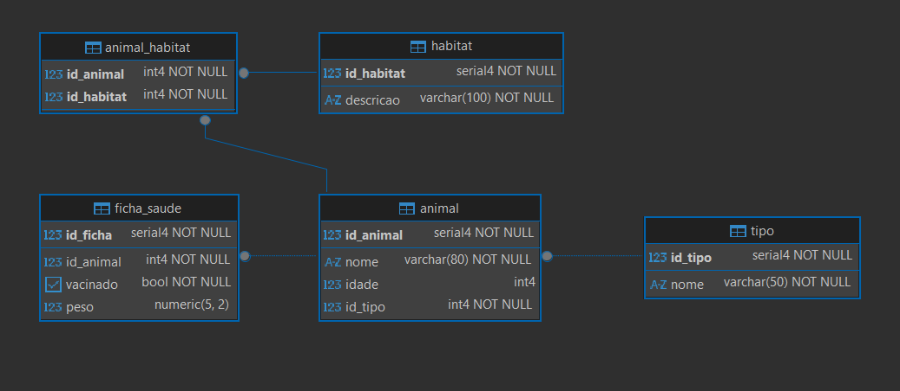

Exercícios!
Exercício prático: Modelagem e comandos SQL (Tema: Animais)
Contexto:
Você foi contratado para modelar um pequeno sistema de cadastro de
animais de um zoológico. Crie um banco de dados com tabelas
relacionadas utilizando o tema animais.
- Crie o banco de dados com o nome animais.
- Criar as tabelas.
- Fornecer ao menos 3 comandos INSERT para cada tabela.

Descreva abaixo dos comandos: qual tabelas tem relacionamentos muitos para muitos (n -> n) e ao menos uma tabela que tenha relacionamento um para muitos (1 -> n)
Exemplo:
-- Crie o banco de dados animais
CREATE DATABASE animais;
-- Tabela Animais
CREATE TABLE ...
--Inserts
INSERT INTO ...
-- A tabela que tem relacionamento muitos para muitos (n -> n) é a tabela ...